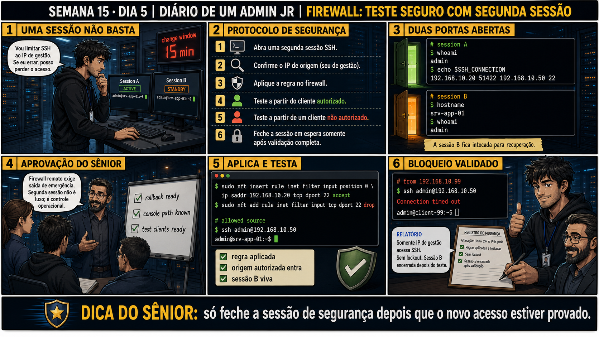

DIARIO DE UM ADMIN JR. | FASE 2 — REDES, DO IP AO DIAGNÓSTICO
🧠 Antes de começar — 20 segundos de memória (Dia 4)
1. Ontem a ordem errada entre duas regras mascarava uma restrição de SSH. Sem olhar: por que testar só da origem autorizada não seria suficiente pra confirmar a correção? 2. Hoje o risco volta a ser o do Dia 1: se trancar fora durante uma mudança de firewall. O que muda na proteção de hoje comparado com o Dia 1?
1. Porque provaria só metade da história — o objetivo da regra restritiva é BLOQUEAR quem não deveria entrar; sem testar uma origem não autorizada, você não confirma que o bloqueio realmente funciona. 2. Hoje a proteção fica explícita como protocolo formal: uma SEGUNDA sessão SSH, aberta ANTES da mudança, funcionando como rede de segurança — não só uma regra bem ordenada, mas um plano B ativo se algo sair errado.
🔗 Conecta com a semana inteira: Você já sabe ordenar regras, diagnosticar
serviço vs firewall, e fazer backup/rollback. Hoje fecha com o protocolo mais importante de todos: nunca
mudar firewall de acesso remoto confiando numa sessão só — uma segunda sessão de segurança não é luxo, é
controle operacional obrigatório.
🔓 Privilégio de hoje: nunca mais aplicar regra de firewall remota sem rede de
segurança. Você ganha o protocolo completo de seis passos: segunda sessão, confirmar origem, aplicar
regra, testar autorizado, testar não autorizado, e só então fechar a sessão de espera.
Semana 15 · Dia 5 | Nível Júnior — Redes
Firewall: Teste Seguro com Segunda Sessão
só feche a sessão de segurança depois que o novo acesso estiver provado
ANTES DE ALTERAR, OBSERVE. DEPOIS DE ALTERAR, VALIDE.

1. O chamado
#6420PRIORIDADE ALTA13:45aberto por: você mesmo, antes da change window
host: srv-app-09 · serviço: SSH restrito a IP de gestão
"Vou limitar SSH ao IP de gestão. Se eu errar, posso perder o acesso."
Reconhecimento honesto do risco. A change window de 15 minutos está no relógio. Qual é a rede de segurança antes do primeiro comando?
💡 Passa o mouse nas palavras destacadas pra ver uma dica rápida — clica se quiser a explicação completa com analogia.
2. O sênior te conta
Semana passada, outro ticket
Um colega ia restringir SSH a um único IP de gestão num servidor de produção, e me perguntou "e se eu
errar e perder o acesso?" — pergunta honesta, sinal de que ele já entendia o risco. A resposta não é
evitar a mudança, é se preparar pra ela. Ensinei o protocolo: abrir uma SEGUNDA sessão SSH, deixada em
standby, antes do primeiro comando de risco. Confirmar o IP de origem com echo
$SSH_CONNECTION. Aplicar a regra na sessão A. Testar dos dois lados — cliente autorizado entra,
não autorizado recebe timeout. Só DEPOIS de validação completa, fechar a sessão B.
Ele quis fechar a sessão B assim que o primeiro teste deu certo. Eu disse pra esperar: enquanto ela
segue aberta, ainda existe uma via de recuperação se a validação revelar algo errado — um terceiro
cliente legítimo bloqueado sem querer, por exemplo. A rede de segurança precisa existir durante TODO o
período de risco, não só até a primeira confirmação. Essa é a síntese da semana inteira: nunca aplique
uma mudança que pode te trancar fora sem ter, antes, um caminho de volta já aberto.
3. Decodificador de conceitos
Clica em qualquer termo pra ver a definição completa e uma analogia do dia a dia:
4. Ferramentas e leitura da evidência
Passo
Comando/Ação
1. Segunda sessão
Nova janela/aba SSH, mantida aberta, sem uso pra aplicar a mudança.
2. Confirmar origem
echo $SSH_CONNECTION — confirma o IP de onde você está conectado.
3. Aplicar regra
nft insert rule ... — a mudança de fato.
4-5. Testar dos dois lados
ssh do cliente autorizado e do não autorizado.
# session A (aplicando a mudança)
$ whoami
admin
$ echo $SSH_CONNECTION
192.168.10.20 51422 192.168.10.50 22
# session B (standby, intocada)
$ hostname
srv-app-01
$ whoami
admin
--- aplica e testa ---
$ sudo nft insert rule inet filter input position 0 \
ip saddr 192.168.10.20 tcp dport 22 accept
$ sudo nft add rule inet filter input tcp dport 22 drop
# allowed source
$ ssh admin@192.168.10.50
admin@srv-app-01:~$
# from 192.168.10.99 (não autorizado)
$ ssh admin@192.168.10.50
Connection timed out
5. Laboratório guiado — marca conforme for testando
⚠️ Este laboratório precisa de uma segunda máquina/VM real (ou de hardware/reboot que um terminal online não reproduz) — pratique no seu ambiente virtual. Não está disponível no terminal Killercoda.
Segurança: execute os testes apenas em VM descartável e confirme nomes de discos, hosts e arquivos antes de cada comando.
Ação: abra duas sessões SSH separadas para o mesmo servidor.
$ ssh admin@IP_DA_VM # sessão A (janela 1)
$ ssh admin@IP_DA_VM # sessão B (janela 2)
🔍 Detalhar esse passo
sessão A
Onde a mudança de firewall será aplicada — é ela que corre o risco.
sessão B
A rede de segurança: aberta ANTES da mudança, fica de reserva. Como já está com uma conexão ESTABLISHED, ela sobrevive mesmo que a regra nova bloqueie NOVAS tentativas de conexão.
Resultado esperado: duas sessões ativas simultaneamente, confirmadas com whoami em cada uma.
Por quê: a sessão B só funciona como rede de segurança se estiver aberta ANTES da mudança arriscada, nunca depois.
Cilada comum: abrir só uma sessão "pra economizar tempo" — é exatamente essa pressa que causa o lockout que o protocolo evita.
Ação: na sessão A, confirme o IP de origem antes de aplicar qualquer regra.
$ echo $SSH_CONNECTION
🔍 Detalhar esse comando
echo $SSH_CONNECTION
Mostra uma variável de ambiente que o SSH define automaticamente na sessão: IP e porta de origem, IP e porta de destino — usada aqui para confirmar o IP exato antes de restringir o firewall a ele.
Resultado esperado: IP de origem correto identificado e anotado.
Por quê: confirmar o IP na hora evita restringir SSH pro IP errado — um erro de digitação aqui é o mesmo lockout, só com outra causa.
Cilada comum: usar um IP "de memória" em vez de confirmar com o comando — VPNs e redes com NAT podem mudar o IP de origem visto pelo servidor.
Se o seu resultado foi diferente
A variável vem vazia → $SSH_CONNECTION só existe em sessões abertas via SSH — se você estiver testando local (console/VM), ela realmente não existirá; use who -m ou verifique os logs de conexão do sshd em outra sessão SSH ativa.
Ação: aplique a regra na sessão A, mantendo a B intocada.
$ sudo nft insert rule inet filter input position 0 ip saddr SEU_IP tcp dport 22 accept
$ sudo nft add rule inet filter input tcp dport 22 drop
🔍 Detalhar esse comando
nft insert rule ... position 0
Insere a regra restritiva no topo da chain, garantindo que seja avaliada primeiro.
ip saddr SEU_IP tcp dport 22 accept
Libera SSH só para o IP confirmado no passo anterior com echo $SSH_CONNECTION.
nft add rule ... tcp dport 22 drop
Bloqueia explicitamente qualquer outra origem tentando SSH, aplicado na sessão A enquanto a sessão B permanece de reserva.
Resultado esperado: regra aplicada, sessão B continua respondendo normalmente.
Por quê: aplicar na sessão A e testar na B (ou numa terceira) é o que garante um teste independente, não viciado pela sessão que já estava aberta.
Cilada comum: usar a própria sessão A pra "confirmar que ainda funciona" — ela já está estabelecida (ESTABLISHED), então não prova nada sobre conexões NOVAS.
🧑🏫 Aqui entra o Mentor (em breve): se a sessão A cair inesperadamente após a regra, este é o ponto onde o chat com o Sênior-IA vai ajudar a usar a sessão B pra investigar e reverter.
Ação: abra uma NOVA tentativa de conexão simulando cliente autorizado e não autorizado.
$ ssh admin@IP_DA_VM # de origem autorizada
$ ssh admin@IP_DA_VM # de outra origem (não autorizada)
🔍 Detalhar esse comando
ssh admin@IP_DA_VM (origem autorizada)
Nova tentativa de conexão do IP liberado pela regra — deve conectar normalmente.
ssh admin@IP_DA_VM (outra origem)
Mesma tentativa, de um IP diferente — deve receber timeout, confirmando que o bloqueio funciona para quem não está na lista.
Resultado esperado: autorizado conecta normalmente, não autorizado recebe timeout.
Por quê: uma conexão nova de verdade é o único teste que prova que a regra funciona pra futuras sessões, não só pras já existentes.
Cilada comum: pular o teste do lado "não autorizado" achando que só o lado autorizado já é suficiente pra validar.
Ação: só então feche a sessão B, documentando tudo.
# sessão B fechada após validação completa
# regras aplicadas e testadas, sem lockout
# autorizado: OK / não autorizado: timeout
Resultado esperado: registro de mudança completo e correto — reproduzindo o painel 6 da prancha de hoje.
Por quê: fechar a sessão B só depois de tudo validado é o que garante que a rede de segurança cobriu o período de risco inteiro, não só o começo.
Cilada comum: fechar a sessão B assim que o primeiro teste der certo, "já que deu tudo certo" — é exatamente o erro que essa aula ensina a evitar.
6. Antes de ver as opções — tenta responder
🧠 Recall ativo: quais são os seis passos do protocolo de segurança pra mudança de firewall
remota, na ordem certa?
1) Abra uma
segunda sessão
SSH (standby). 2) Confirme o IP de origem (seu, de gestão). 3) Aplique a regra no firewall. 4) Teste a
partir do cliente autorizado. 5) Teste a partir de um cliente NÃO autorizado. 6) Só feche a sessão de
espera depois de validação completa. Pular qualquer passo é assumir o risco de lockout sem rede de
segurança.
QUESTÃO 1 de 3
7. Questão comentada — clica numa alternativa
Você vai aplicar uma regra restringindo SSH a um único IP de gestão, num
servidor de produção acessado remotamente. Qual é o PRIMEIRO passo, antes de tocar em qualquer regra de
firewall?
💡 Analogia do Sênior para Fixar: O princípio fundamental de 05 TESTE SEGURO SEGUNDA SESSAO é como o alicerce de sustentação de um viaduto: garante que a estrutura de comunicação suporte alto tráfego sem colapsar.
QUESTÃO 2 de 3 — cenário de erro real
7.1 A regra foi aplicada, o cliente autorizado entrou, o não autorizado recebeu timeout. Sessão B
continua aberta
Um colega já quer fechar a sessão B, "já que deu tudo certo".
Por que a ordem certa é: validar completamente PRIMEIRO, fechar a sessão de
segurança DEPOIS — nunca o contrário?
💡 Analogia do Sênior para Fixar: Diagnosticar anomalias em 05 TESTE SEGURO SEGUNDA SESSAO é como o eletricista usando o multímetro no quadro de disjuntores: mede a passagem de sinal no ponto exato da falha.
QUESTÃO 3 de 3 — detalhe que confunde todo iniciante
7.2 "Se a sessão A cair durante a mudança, a sessão B automaticamente assume o controle?"
Um colega acha que as duas sessões estão de alguma forma "sincronizadas".
Qual é o papel real da sessão B, e o que muda se a sessão A cair?
💡 Analogia do Sênior para Fixar: Aplicar as boas práticas de 05 TESTE SEGURO SEGUNDA SESSAO é como o protocolo de segurança da aviação: elimina pontos únicos de falha e garante previsibilidade operacional.
8. Procedimento profissional
Antes de qualquer mudança de firewall remota, abra uma segunda sessão SSH em standby.
Confirme o IP de origem correto (echo $SSH_CONNECTION) antes de escrever a regra.
Aplique a regra na sessão principal, mantendo a segunda intocada.
Teste a partir do cliente autorizado e do não autorizado, os dois lados.
Só feche a sessão de segurança depois que a validação estiver 100% completa.
Prevenção
Torne o protocolo de segunda sessão um item obrigatório de checklist pra qualquer mudança
de firewall remota, sem exceção — mesmo mudanças que "parecem simples" se beneficiam da mesma rede de
segurança, porque o risco de lockout não depende do tamanho da regra.
9. Validação e encerramento
Uma segunda sessão foi aberta como rede de segurança antes de qualquer mudança.
O IP de origem foi confirmado antes de escrever a regra restritiva.
O teste dos dois lados (autorizado e não autorizado) foi completado.
A sessão de segurança só foi fechada após validação total.
Rollback e limites
Se a sessão A cair durante a mudança, a sessão B (ainda aberta) é o caminho de
rollback — usada pra reverter a regra que causou o problema. O cuidado real é nunca pular a etapa da
segunda sessão "porque a mudança parece simples" — mudanças simples também podem sair erradas.
💡 Sobre repetição espaçada: "não feche a rede de segurança antes de validar"
conecta com toda a semana (Dia 1: isolate pode derrubar sessão; Dia 2: rollback testado antes de confiar) —
hoje formaliza o protocolo completo. O Anki vai conectar os quatro dias.
10. Resposta final
Alternativa correta: A. Nesta aula, o primeiro passo certo foi abrir
uma segunda sessão SSH em standby, antes de qualquer regra. O ponto central do caso é este: só feche a
sessão de segurança depois que o novo acesso estiver provado.
🏁 SEMANA 15 CONCLUÍDA
Firewall stateful, nftables básico com
backup/rollback, diagnóstico serviço-vs-firewall, ordem de regras e o protocolo de segunda sessão — a base
completa de firewall sem risco de autossabotagem está pronta. A Semana 16 fecha o bloco de fundamentos de
rede com SSH avançado (chaves, ProxyJump, hardening) e uma missão integrando tudo.
🔓 O que você desbloqueou hoje
Capacidade de aplicar qualquer mudança de firewall remota com uma rede de
segurança real, nunca confiando numa sessão só. Isso fecha a Semana 15. Amanhã começa a Semana 16: chaves
SSH, acesso via bastion (ProxyJump) e hardening — fechando o bloco de fundamentos de rede antes de avançar
pra NAT, VPN e diagnóstico com tcpdump.